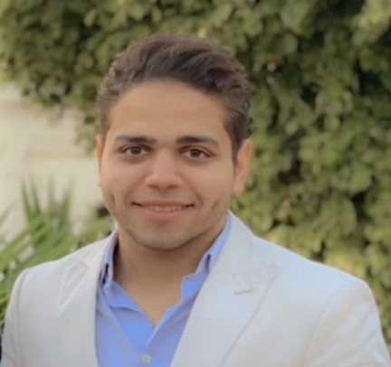

Mohamed Monir Akila

An enthusiastic, confident and well-presented person who has the necessary
drive, commitment and interpersonal skills required to become an effective
clinical pharmacist. Being ambitious and highly motivated, I am looking
for a challenging and growth-oriented environment to further increase my
knowledge and skills.
Experience
-
MAR 2022 - APR 2024
Shift Manager, Social Media Moderator, Designer at
Hannoun pharmacies.
-
DEC 2020 - DEC 2021
Outpatient Pharmacist at French Hospital.
-
JUL 2019 - AUG 2019
-
JUL 2018 - SEP 2018
Community Pharmacist Trainee at Marwa El-Mahdy pharmacy
Education
-
AUG 2023 - Diplome of Biochemical Analysis
Faculty of Pharmacy, Alexandria university. Overall GPA 3.54/4.00
-
AUG 2020 - Bachelor of Clinical Pharmacy
Faculty of Pharmacy, Alexandria university. Overall GPA 3.54/4.00
-
JUL 2015 - General Secondary Certificate
El-Safwa Private School (SPS)
Skills
- Problem Solving
- Decision Making Abilities
- Escellant Verbal Communitcation Skills
Certficates
Interests
- Soccer
- padel tennis
- Chess